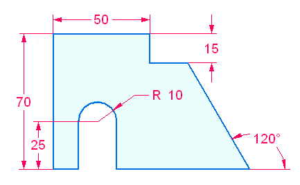
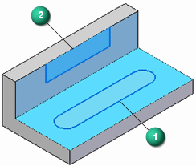
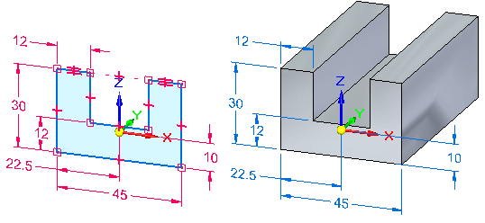
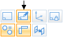
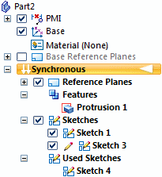
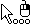
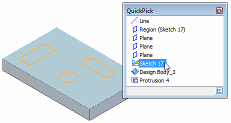
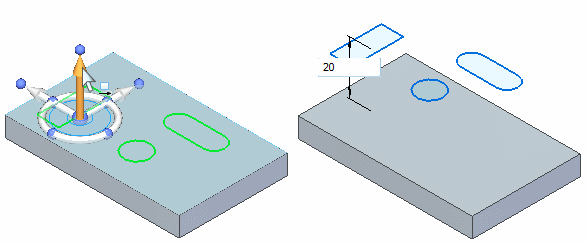
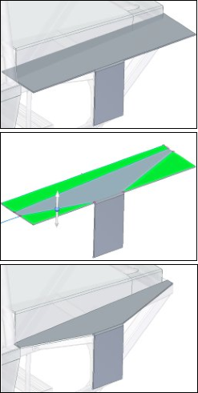

Drawing synchronous sketches of parts
You draw synchronous sketches to establish the basic shape requirements of a part before you construct any features.

You can draw a synchronous sketch on a principal plane of the base coordinate system, a planar face on the model, or a reference plane. You can then use these sketches to create sketch-based features, such as extruded features which add or remove material.
Sketch regions
In a part or sheet metal document, when you draw 2D sketch elements that form a closed area, the closed area is automatically displayed as a sketch region (1). When working in a shaded view, the closed region also displays as shaded.

Sketch regions are formed automatically when a series of sketch elements close on themselves (1), or when sketch elements and one or more model edges form a closed area (2).

-
You can use closed sketch regions to construct features with the Select tool. When you select a closed region, the protrusion feature command starts.
-
To use an open sketch, choose a protrusion command (Extrude or Revolve) in the Solids group, which requires a step to define the material side of the open sketch.
As you draw, you may want to disable sketch regions. You can do this by clearing the Enable Regions command, which is located on the shortcut menu when you select a sketch in PathFinder. You can select the command a second time to turn region selection on again. The Enable Regions command is not available in an assembly document.
By default, all sketch geometry placed on a sketch plane merges into a single sketch. This is controlled by the sketch option Merge with Coplanar Sketches. If separate sketches are required on a sketch plane, the Merge with Coplanar Sketches option can be turned off.
Using sketches to construct features
When you use a sketch to construct a feature in a part or sheet metal document, by default the sketch elements are consumed and transferred to the Used Sketches collection in PathFinder. The dimensions on the sketch are migrated to the appropriate model edges when possible.
Any remaining sketch geometry not consumed remains in the Sketches collector.

After you construct a feature in a synchronous model, the original sketch geometry does not drive the feature.
You can use the Migrate Geometry and Dimensions command on the shortcut menu when a sketch is selected in PathFinder to control whether sketch elements are consumed and dimensions are migrated when you construct features using the sketch.
Synchronous sketches locked to faces
A synchronous sketch drawn on a model face is automatically locked to the face. As the face moves, the sketch moves with the face. By default, the Maintain Sketch Planes option on the Advanced Design Intent panel is on. See Using the Advanced Design Intent panel for more information.

To unlock the sketch from the model face, turn off the Maintain Sketch Planes option in the Advanced Design Intent panel.
If a sketch is drawn on a model face that is coplanar to a base reference plane, the sketch is not locked to the model face.
Sketching and PathFinder
The sketches you draw are listed in PathFinder. PathFinder also lists the base coordinate system, PMI dimensions, the base reference planes, features you construct, and used sketches.

You can display or hide individual sketches or all the sketches in the document using the check box options in PathFinder and commands on the PathFinder shortcut menu.
When a sketch name is selected in PathFinder, you can use shortcut commands to:
Editing sketches
You can move and resize sketch elements using the Select tool. You also can edit sketch elements using commands such as Extend To Next, Trim, Mirror, Scale, Rotate, and Stretch. With these commands, you select the command first, then follow the prompts to edit the sketch elements you want.
Moving sketches
Sometimes you may want to move or rotate an entire sketch to a new position in space. By default, when you use the Select tool to select sketch elements in the graphics window, only a sketch region or the selected sketch element is selectable.
To select an entire sketch, you can select the sketch entry in PathFinder, or you can use QuickPick

to select the sketch in the graphics window.
You can then use the steering wheel to move or rotate the sketch to a new position in space.

To make the move shown, turn off the Coplanar setting on the Design Intent panel or the Advanced Design Intent. If not, the face and sketch move together because they are coplanar.
If the sketch moves such that it becomes coplanar to another sketch, the two sketches combine into one sketch, unless the Merge Coplanar Sketches command is cleared for one of the sketches.
For more information about moving synchronous sketches, see the following topics:
Sketches and associativity
Sketch geometry is not directly associative to the plane or face on which it is drawn. If you move the plane or face on which the sketch is drawn, the sketch geometry does not move unless it is also in the select set. This does not apply to sketches drawn on the principal planes of the base coordinate system or the base reference planes, as these planes are fixed in space.
You can apply 2D geometric relationships between sketch elements and model edges. If the model edges move, the sketch elements and geometric relationships update.
Restoring sketches
To restore a sketch to its original location on the model, use the Restore command on the shortcut menu when a used sketch is selected. This can be useful if you want to use the sketch to construct another feature elsewhere on the model or if you deleted the feature that the used sketch described.
See the Help topic, Restore a used sketch.
Projecting elements onto a sketch
You can use the Project to Sketch command on the Sketching tab to project model edges or sketch elements onto the current sketch plane. The sketch elements you project are associative to the parent element. If the parent element is modified, the projected element updates.

The associative link between the parent element and the projected element is discarded when you construct a feature using the projected elements.
How do I
Project part edges onto a sketchChange peer edge locatability
Change silhouette edge locatability
Delete a sketch or sketch elements
Rename a sketch
Copy or move a sketch to another reference plane
Copy a sketch to another document
Learn more
Using ordered sketches to create ordered featuresUsing sketches in assemblies
Editing sketch elements